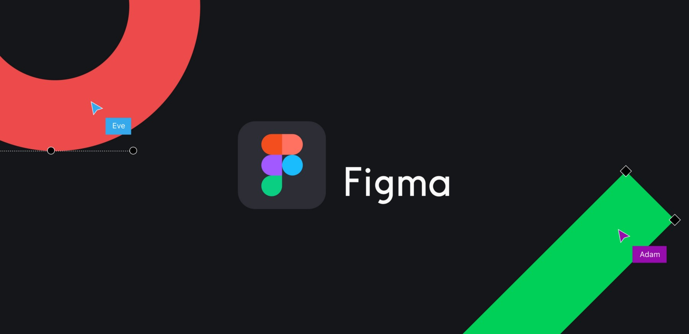
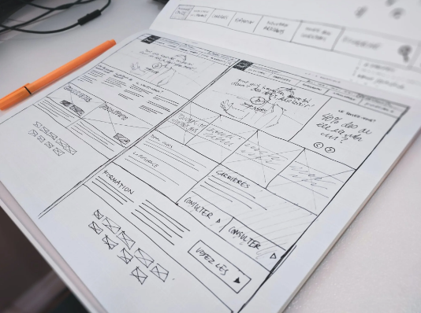

FIGMA
Figma

Figma es una herramienta de prototipado web y editor de gráficos vectorial, que a diferencia de las otras herramientas, se aloja en la web.
Además, una de las características que tiene Figma es que, al estar basada en el navegador, puedes compartir el proyecto con tu equipo y hacer modificaciones en la misma mesa de trabajo.
Características de Figma
Te contamos las peculiaridades que tiene este programa que hace que nos encante:
1. Lo más interesante de Figma es su usabilidad. Es intuitiva y fácil de utilizar.
2. Al ser también un editor de gráficos vectoriales, podrás utilizarlo para maquetar todo tipo de piezas digitales e interactivas.
3. Puedes exportar en formatos estándar como .pdf, .png, .jpg.
4. Figma funciona con plugins que podrás añadir y ampliar su uso
5. Puedes compartir el trabajo con tus compañeros desde la nube
6. Te permite sistematizar todos tus diseños y alojarlos en la nube
7. Figma funciona con páginas, lo que te va a permitir tener las plantillas, colores y todos los elementos que necesites en un mismo archivo y separados por estas páginas
8. Tiene versión gratuita
